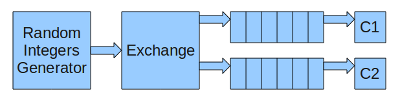
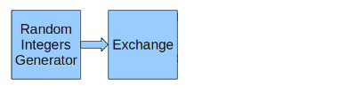
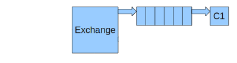
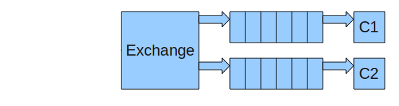

This tutorial shows how to distribute messages to multiple servers for processing. We will be using RabbitMQ which is based on AMQP.
The way messaging works is that you have producers producing messages and consumers consuming them. We are going to have 1 producer generating random integers and 2 consumers: 1 consuming the odd integers and 1 consuming the even integers.
The producer sends messages to the exchange and the consumers create and bind queues to the exchange to receive the messages they are interested in. The way messages are routed is using routing keys for the messages and binding keys for the queues.

The producer will be running on the server “producer.messaging.com”, 1 consumer will be running on “consumer1.messaging.com” and the other one on “consumer2.messaging.com”.
Requirements
We need to install RabbitMQ server on producer.messaging.com and py-amqplib on the 3 servers.
Here, I am using Ubuntu on all the servers.
sudo apt-get install rabbitmq-server sudo apt-get install python-amqplib
After installing rabbitmq-server, the server should be up and running.
Producer
First thing to do is to create a Python class for the producer. The constructor will initiate a connection to the RabbitMQ server. The constructor also takes as argument the name of the exchange which will receive all the messages from the producer.
from amqplib import client_0_8 as amqp
class Producer(object):
def __init__(self, exchange_name, host, userid, password):
"""
Constructor. Initiate connection with the RabbitMQ server.
@param exchange_name name of the exchange to send messages to
@param host RabbitMQ server host
@param userid RabbitMQ server username
@param password RabbitMQ server user's password
"""
self.exchange_name = exchange_name
self.connection = amqp.Connection(host=host, userid=userid,
password=password, virtual_host="/", insist=False)
self.channel = self.connection.channel()
...
We also need a method to publish a message to the exchange. This method takes the message and its routing key as arguments. The content type of the message here is text but you can change it. Also, we use persistence mode for the message (delivery_mode = 2) so best-effort is used for delivery.
def publish(self, message, routing_key):
"""
Publish message to exchange using routing key
@param text message to publish
@param routing_key message routing key
"""
msg = amqp.Message(message)
msg.properties["content_type"] = "text/plain"
msg.properties["delivery_mode"] = 2
self.channel.basic_publish(exchange=self.exchange_name,
routing_key=routing_key, msg=msg)
At last, we add a method to close the channel and the connection.
def close(self):
"""
Close channel and connection
"""
self.channel.close()
self.connection.close()
We will come back to this class when we look at our example.
Consumer
Let’s create our Consumer class to help us create consumers.
from amqplib import client_0_8 as amqp
class Consumer(object):
def __init__(self, host, userid, password):
"""
Constructor. Initiate a connection to the RabbitMQ server.
@param host RabbitMQ server host
@param userid RabbitMQ server username
@param password RabbitMQ server user's password
"""
self.connection = amqp.Connection(host=host, userid=userid,
password=password, virtual_host="/", insist=False)
self.channel = self.connection.channel()
Our close method:
def close(self):
"""
Close channel and connection
"""
self.channel.close()
self.connection.close()
Next is a method to create an exchange. We use the exchange type “direct” which means the broker routes the message using a straight match on the routing key. If a we bind a queue using the key ‘test’, only the messages with the routing key ‘test’ will be sent to it.
def declare_exchange(self, exchange_name, durable=True, auto_delete=False):
"""
Create exchange.
@param exchange_name name of the exchange
@param durable will the server survive a server restart
@param auto_delete should the server delete the exchange when it is
no longer in use
"""
self.exchange_name = exchange_name
self.channel.exchange_declare(exchange=self.exchange_name,
type='direct', durable=durable, auto_delete=auto_delete)
Followed by a method to create a queue and bind it to the exchange. We need to indicate the binding key so the exchange knows which messages to send to the queue based on their routing key.
def declare_queue(self, queue_name, routing_key, durable=True, exclusive=False, auto_delete=False):
"""
Create a queue and bind it to the exchange.
@param queue_name Name of the queue to create
@param routing_key binding key
@param durable will the queue service a server restart
@param exclusive only 1 client can work with it
@param auto_delete should the server delete the exchange when it is
no longer in use
"""
self.queue_name = queue_name
self.routing_key = routing_key
self.channel.queue_declare(queue=self.queue_name, durable=durable,
exclusive=exclusive, auto_delete=auto_delete)
self.channel.queue_bind(queue=self.queue_name,
exchange=self.exchange_name, routing_key=self.routing_key)
At this point, we can get define a method to start a consumer and use a callback for each message delivered. The next method allows us to do that.
def start_consuming(self, callback, queue_name=None, consumer_tag='consumer'):
"""
Start a consumer and register a function to be called when a message is consumed
@param callback function to call
@param queue_name name of the queue
@param consumer_tag a client-generated consumer tag to establish context
"""
if hasattr(self, 'queue_name') or queue_name:
self.channel.basic_consume(queue=getattr(self, 'queue_name',
queue_name),
callback=callback, consumer_tag=consumer_tag)
We need the opposite of the previous method.
def stop_consuming(self, consumer_tag='consumer'):
"""
Cancel a consumer.
@param consumer_tag a client-generated consumer tag to establish context
"""
self.channel.basic_cancel(consumer_tag)
Last, we need a wait method to ask the consumer to be patient and wait for activity on the channel: ie: messages being delivered.
def wait(self):
"""
Wait for activity on the channel.
"""
while True:
self.channel.wait()
Example
Let’s put our classes into action. We are going to define a producer and 2 consumers as described at the beginning of this tutorial.
First, our producer will generate random integers and send them to the exchange. If the integer is odd, it will use the routing key “odd” and if the integer is even, it will use the routing key “even”. This code will be running on “producer.messaging.com”.

import random, time
import producer
p = producer.Producer(exchange_name='integers', host='producer.messaging.com', userid='guest', password='guest')
while True:
# generate a random integer between 1 and 100 included
i = random.randint(1, 100)
if i % 2 == 0:
key = 'even'
else:
key = 'odd'
p.publish(str(i), key)
print 'integer: %d' % i
time.sleep(1)
Next is our first consumer running on “consumer1.messaging.com”. We declare an exchange named “integers” and create a queue and bind it to receive messages with the routing key “odd”. If the exchange and queue already exist, calling declare_exchange() and declare_queue() does nothing.
We define a callback function which prints the odd integer and acknowledge the message so the exchange knows it has been delivered properly.
import consumer
c = consumer.Consumer(host='producer.messaging.com', userid='guest', password='guest')
c.declare_exchange(exchange_name='integers')
c.declare_queue(queue_name='odds', routing_key='odd')
def message_callback(message):
print 'odd integer: %s' % message.body
c.channel.basic_ack(message.delivery_tag)
c.start_consuming(message_callback)
c.wait()
First time we call declare_exchange() and declare_queue(), we end up with the following:

Similar to the first consumer, we create another consumer on “consumer2.messaging.com” to consume the even integers.
import consumer
c = consumer.Consumer(host='producer.messaging.com', userid='guest', password='guest')
c.declare_exchange(exchange_name='integers')
c.declare_queue(queue_name='evens', routing_key='even')
def message_callback(message):
print 'even integer: %s' % message.body
c.channel.basic_ack(message.delivery_tag)
c.start_consuming(message_callback)
c.wait()
We end up with the following:

Let’s start our 2 consumers and our producer. This is the output of each:
Producer:
integer: 14 integer: 47 integer: 6 integer: 83 ...
Consumer 1:
odd integer: 47 odd integer: 83
Consumer 2:
even integer: 14 even integer: 6
On the server where rabbitmq is running, we can use rabbitmqctl to take a look at the objects created.
List the exchanges. We can see our exchange “integers” listed in the direct category.
$ sudo rabbitmqctl list_exchanges Listing exchanges ... amq.direct direct amq.topic topic amq.rabbitmq.logging topic amq.fanout fanout integers direct amq.headers headers direct amq.match headers ...done.
List the queues. We can check the number of messages to be consumed.
$ sudo rabbitmqctl list_queues Listing queues ... evens 4 odds 3 ...done.
If you want to remove the exchange, all the queues. You have to first stop the app, then issue a reset follow by a start.
$ sudo rabbitmqctl stop_app $ sudo rabbitmqctl reset $ sudo rabbitmqctl start_app